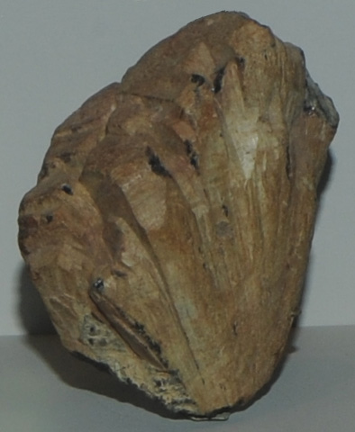

|

| (Y,Ca,Ce,U,Th)(Nb,Ta,Ti)2O6
This sample of euxenite is displayed in the Smithsonian Museum of Natural History. Euxenite is a oxide mineral with a remarkable collection of rare elements: yttrium, cerium, uranium, thorium, niobium, tantalum and titanium. It has the composition (Y,Ca,Ce,U,Th)(Nb,Ta,Ti)2O6. The sample at left is about 12 cm across and is from Ambatafolsikely, Madagascar.
|